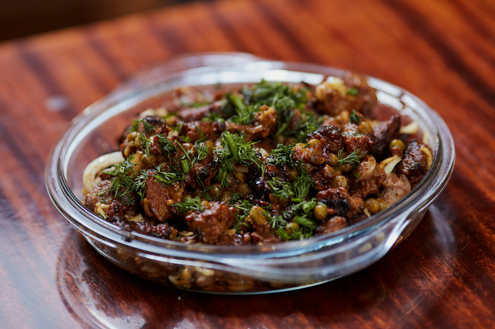

Fried Meat

Description
Picture thinly sliced beef,seasoned to perfection, coated in a cripsy golden crust.
With each bite, Experience the satisfying crunch followed by tender, flavorful beef
Ingredients
The following ingredients were used to prepare its taste:
- 500g meat
- 2 large tomatoes
- 1 large onion
- 1/4 cup cooking oil
- 2 tea spoon sauce
- 2 pieces garlic
- Dania
- 1/4 tea spoon salt
Steps
- Boil the meat for 20 mites in 1 cup of water until it dries
- Cut the onion and tomatoes, garlic and Dania separately as the meat boils
- When the meat has dried, add cooking oil and stir gently until its color changes to golden brown
- Add onions, garlic and continue to stir until onions turns brown and mix completely with the meat
- Add tomatoes and Dania into the meat, stir for 1 minute and close the pot with a lid for 2 minutes
- Add the salt, sauce and stir to mix the flavors all together. Let it cook for for 2 minutes and serve